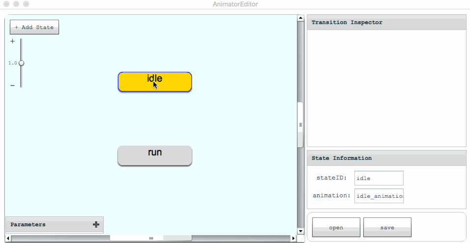
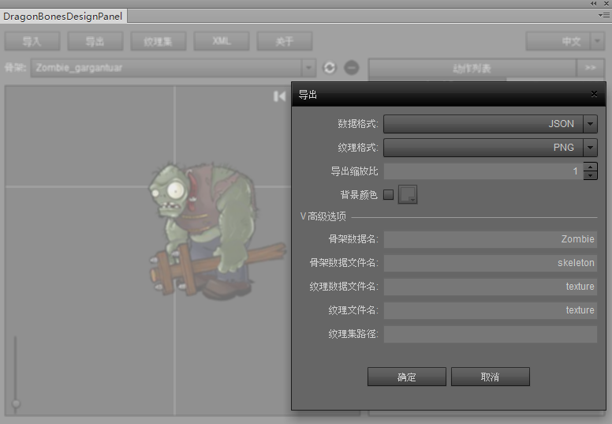
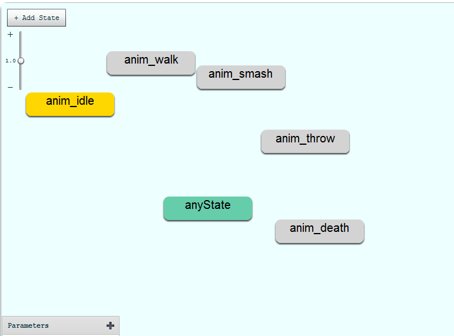
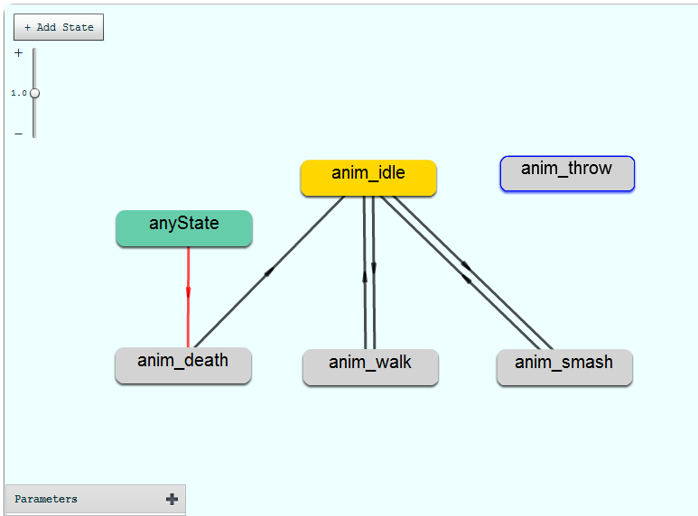

用过Unity开发的工程师们一定对Mecanim的方便快捷印象深刻，用过之后再也不想回到刀耕火种的时代了。
目前在做egret项目，首先就动手做了一个仿制Mecanim的FSM编辑器。工具做得越早，受益越多。
仓库地址：https://github.com/wonderyue/Animator
简要说明
-
State：状态。成员变量中包含Transition数组。
-
Transition：状态跳转。成员变量包含from（初始状态）和to（跳转状态），以及condition数组。
-
Condition：跳转条件。成员变量包含Parameter，和logic（因Parameter而异，如number型逻辑包括">","<","=",“≠”），value（如bool型value可为true或false）
-
Parameter：参数。成员变量包含类型（bool，number，trigger，complete，其中complete相当于Mecanim中的exitTime，代表跳转条件为动画播放结束）
示例

导出json文件格式：
大概就是下面这样事儿的。为了方便理解，只与编辑器有关的字段我没有给出，如果是用在动画以外的情景使用状态机，animation字段也可以忽视。
1 | { |
动画应用
下面以egret的dragonBones应用为例
仓库地址：https://github.com/wonderyue/AnimatorDemo.git
首先导出egret格式的骨骼动画

然后将skeleton.json文件丢入Animator中，（跟open是一个效果，两种方式任君选用），刚丢进去时应该是这样事儿的

稍微编辑一下

最后点击save，保存下来，放到工程资源目录下。
探讨
代码部分参考demo即可，非常简单，不过300行。只对个别部分做一些探讨：
-
文件名暂时有严格的要求。
要导入的骨骼文件必须以"skeleton.json"结尾，保存的输出文件必须以"fsm.json"结尾。这部分在编辑器的源码中可以看到，因为扩展名都是json，所以暂时对文件名有了比较严格的要求。这部分可以根据具体应用定制。 -
关于业务逻辑的一些建议。
涉及到具体业务逻辑，如动作游戏的动画切换，可能会涉及到以下问题。第一种是立即切换，如anyState跳转到die，我们一般希望立即跳转。第二种是有限窗口内跳转，比如三连击时，我们不希望玩家点击三次攻击动画一瞬间播放到了第三击而前两击几乎看不到。为了兼顾上面两种情况，我们可以在跳转前加一个判断，条件可能是当前动画名称，下一个动画名称，是否循环播放以及cutTime/totalTime等几个条件的逻辑组合。